FORD pali i jeździ uszkodzony w tył jak na przedstawionych zdjęciach. Auto w bogatej wersji wyposażenia, wersja ST z 3-litrowym doładowanym silnikiem o mocy 400km. Samochód regularnie serwisowany jest to jego jedyny wypadek od nowości. Posiadamy w ofercie również inne egzemplarze w różnych wersjach i rocznikach.
Zaoszczędź do 40 % na zakupie samochodu, sprowadzając go z nami z USA lub Kanady!
Sprowadzamy auta z USA i Kanady pod zamówienie klienta! Załatwiamy wszystkie formalności związane z zakupem, transportem oraz opłatami zarówno w Holandii jak i Polsce!
Kompleksowa obsługa od A do Z.
Z powodzeniem działamy na rynku importu od wielu lat, co potwierdzają nasi stali klienci!
Oferowane przez nas samochody pochodzą tylko i wyłącznie od największych amerykańskich firm ubezpieczeniowych lub poleasingowych.
Dodatkowo każde auto przed licytacja jest gruntownie sprawdzane pod względem jego historii, wcześniejszej wypadkowości oraz wielu innych aspektów aby zapewnić klientowi 100% bezpieczeństwa!
Cena podana w ogłoszeniu zawiera wszystkie opłaty importowe z transportem pod wskazany adres, pozostają koszty związane z rejestracja pojazdu w Polsce oraz ewentualna naprawa auta.
Jeżeli nie podoba Ci się konkretny egzemplarz prezentowany w ogłoszeniu, podaj nam swoje wytyczne; kolor, silnik, przebieg, rocznik, a my znajdziemy odpowiednią sztukę!
Zapraszamy serdecznie do naszego biura, które mieści się pod Warszawą:
05-230 Kobyłka
Ul. Nadarzyńska 83
Zapraszamy w godzinach:
Pn-Pt 09:00 - 17:00 lub w innych godzinach po wcześniejszym umówieniu się.
Lub do całodobowego kontaktu telefonicznego:
Nasze realizacje znajdziesz na Facebooku oraz Istagramie:
U.S Automotive - kompleksowy import aut z USA i Kanady
Lub
www.usautomotive.pl
Powyższa oferta ma charakter informacyjny i nie stanowi oferty handlowej w rozumieniu art. 66 §1 Kodeksu Cywilnego
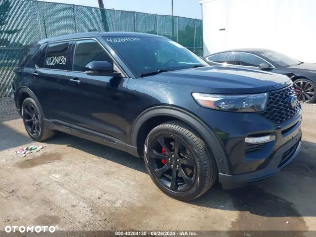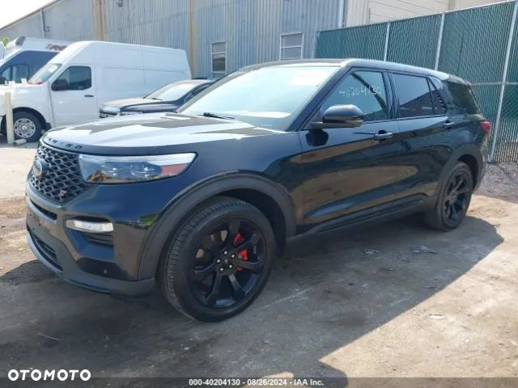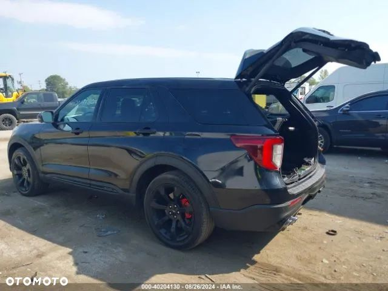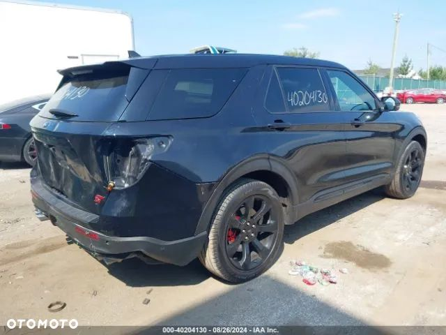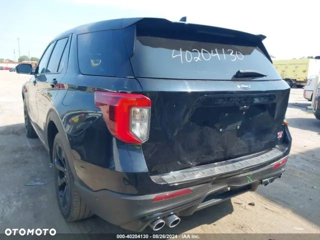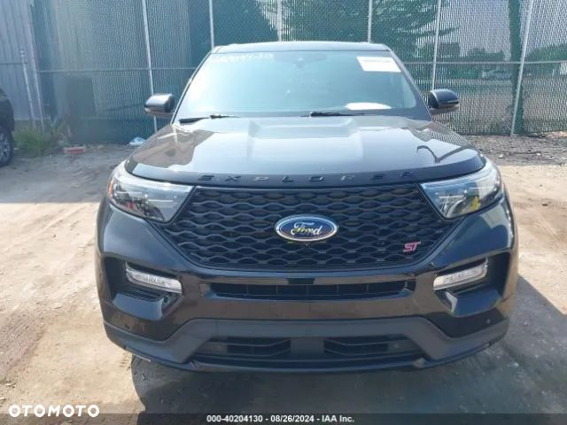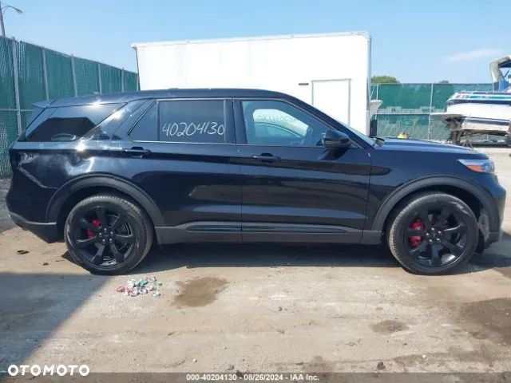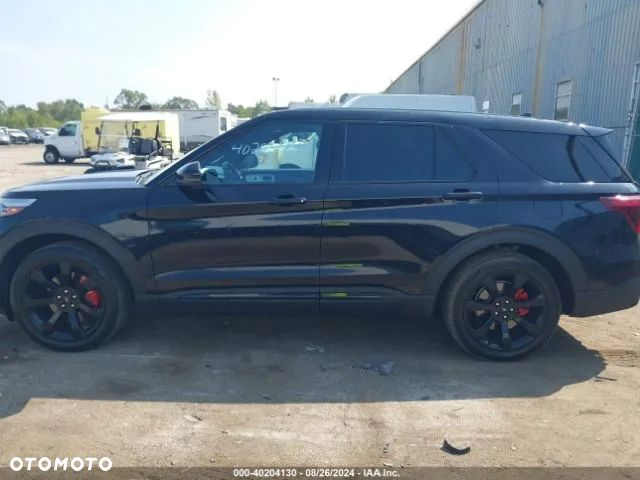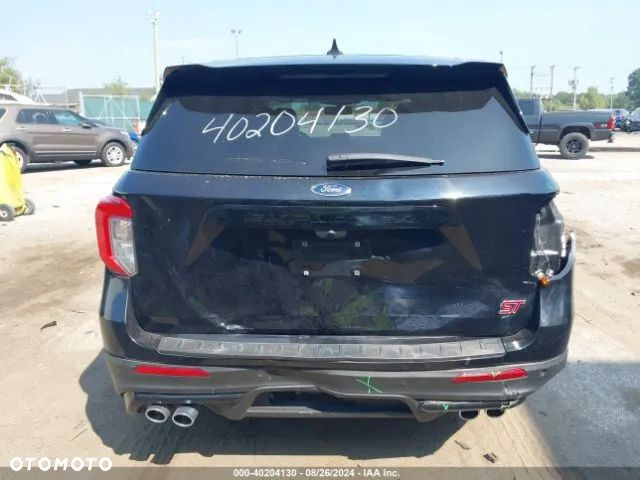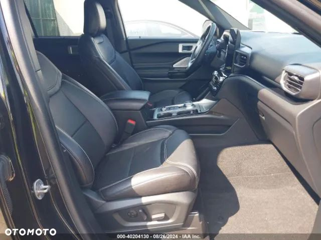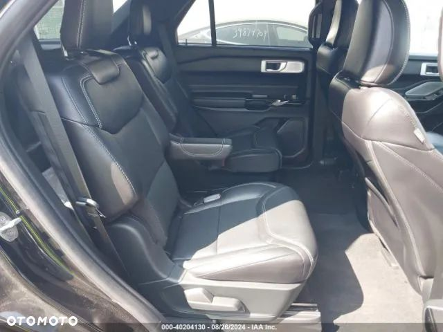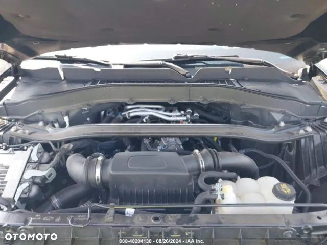